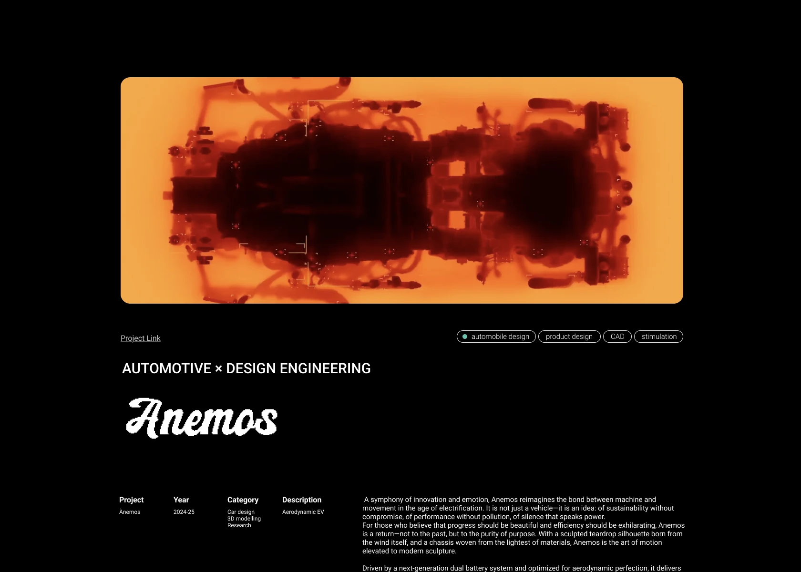
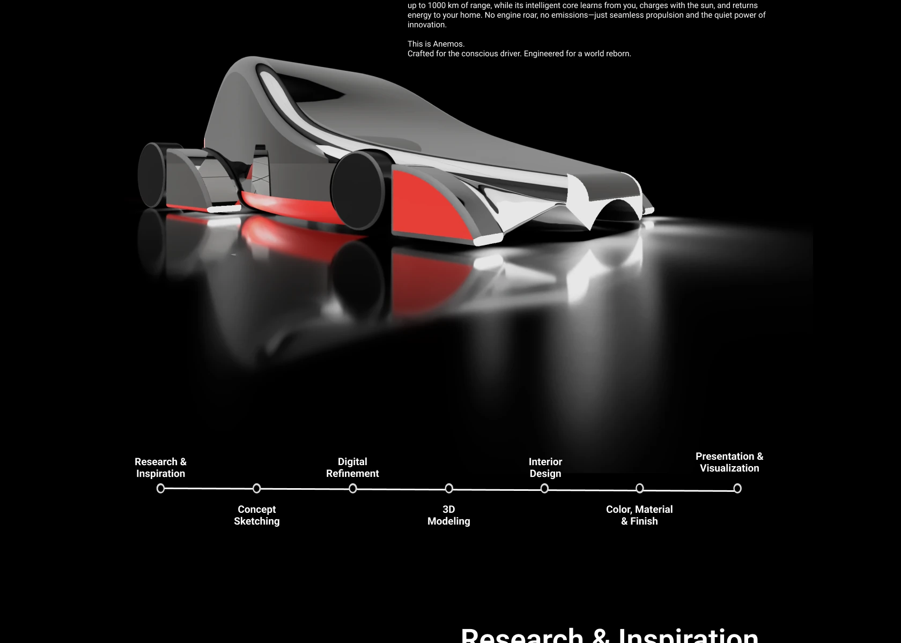
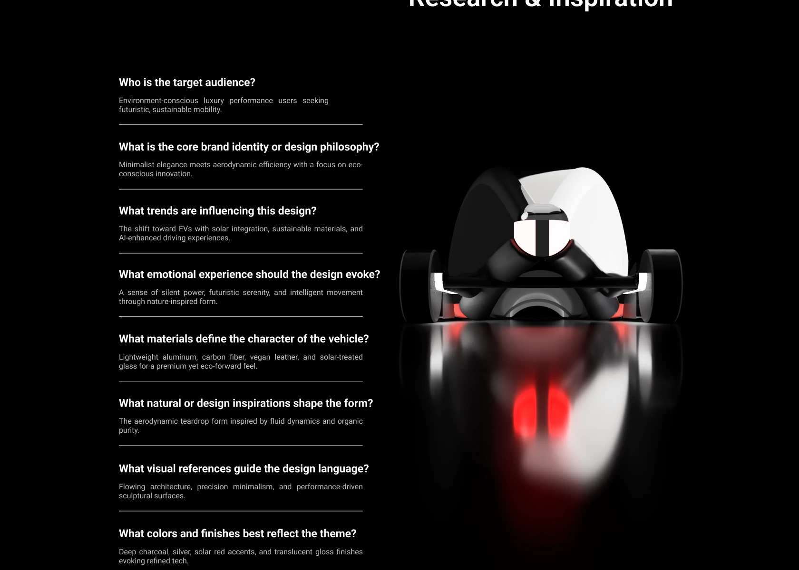
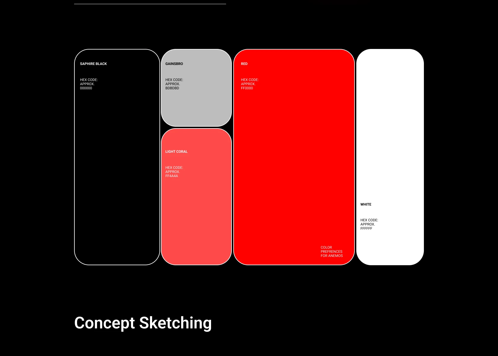
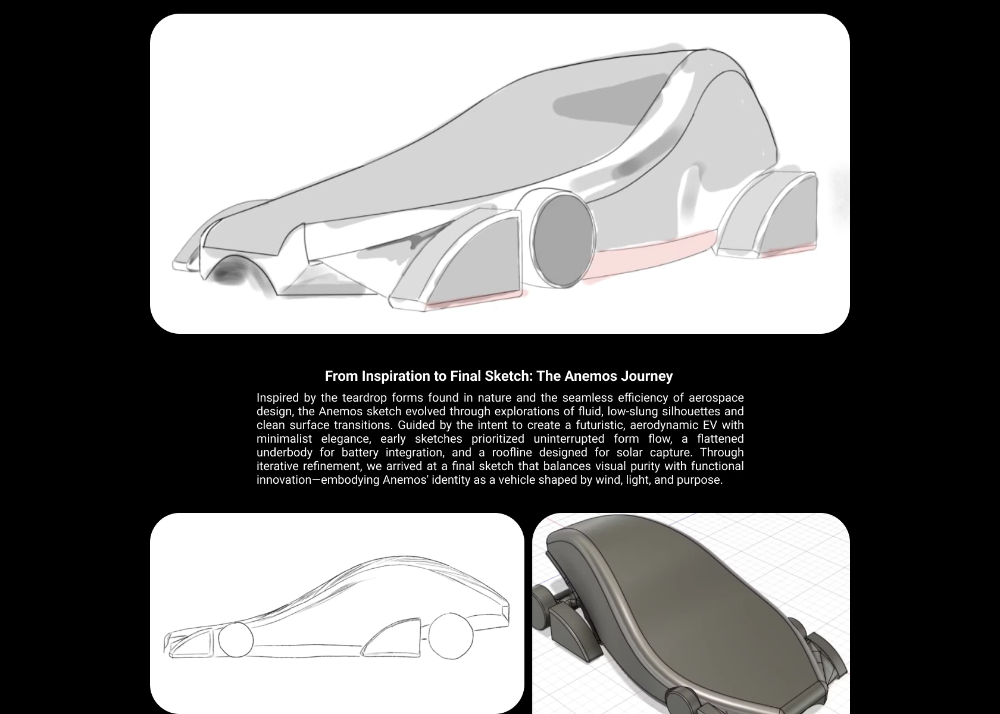
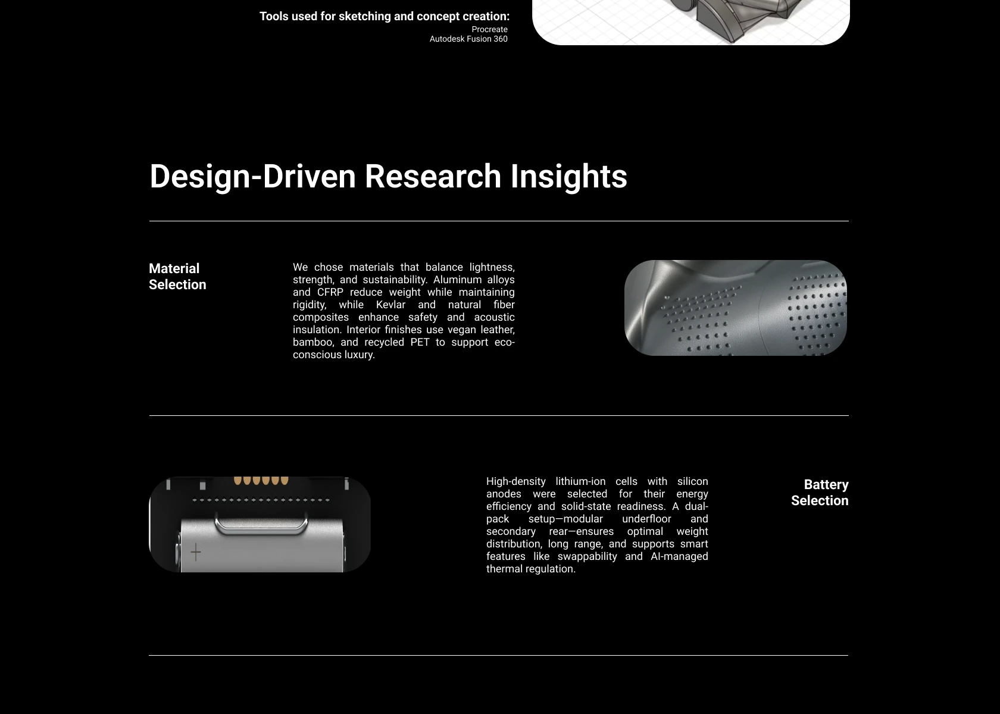
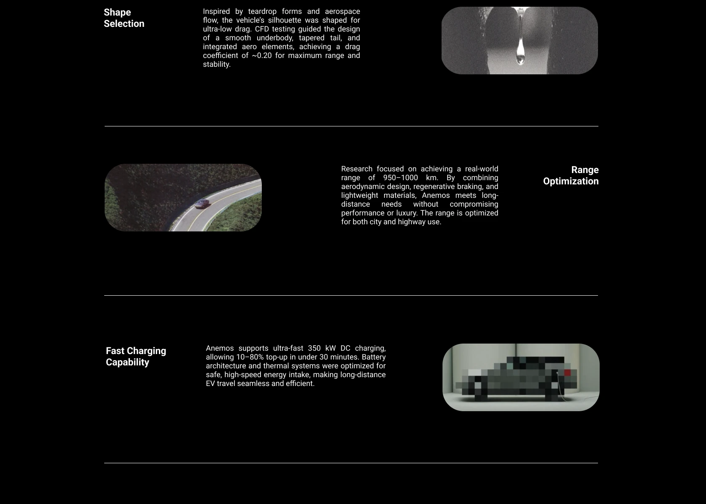
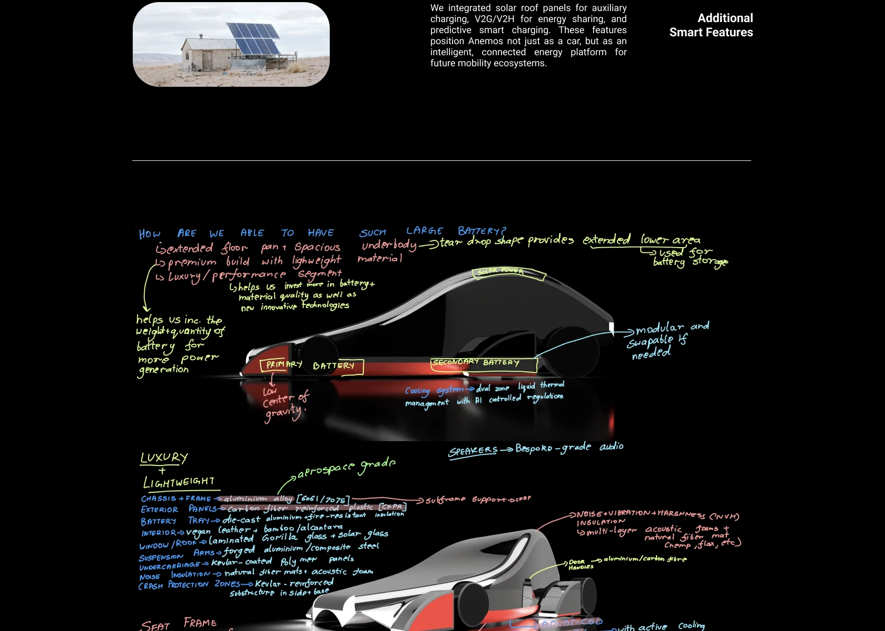
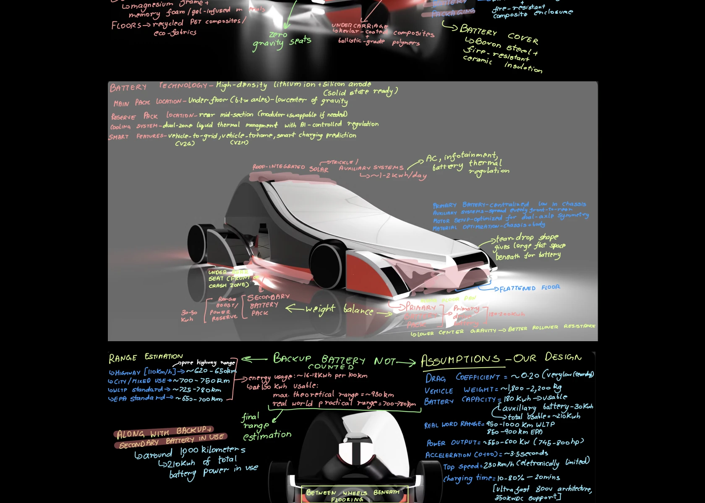
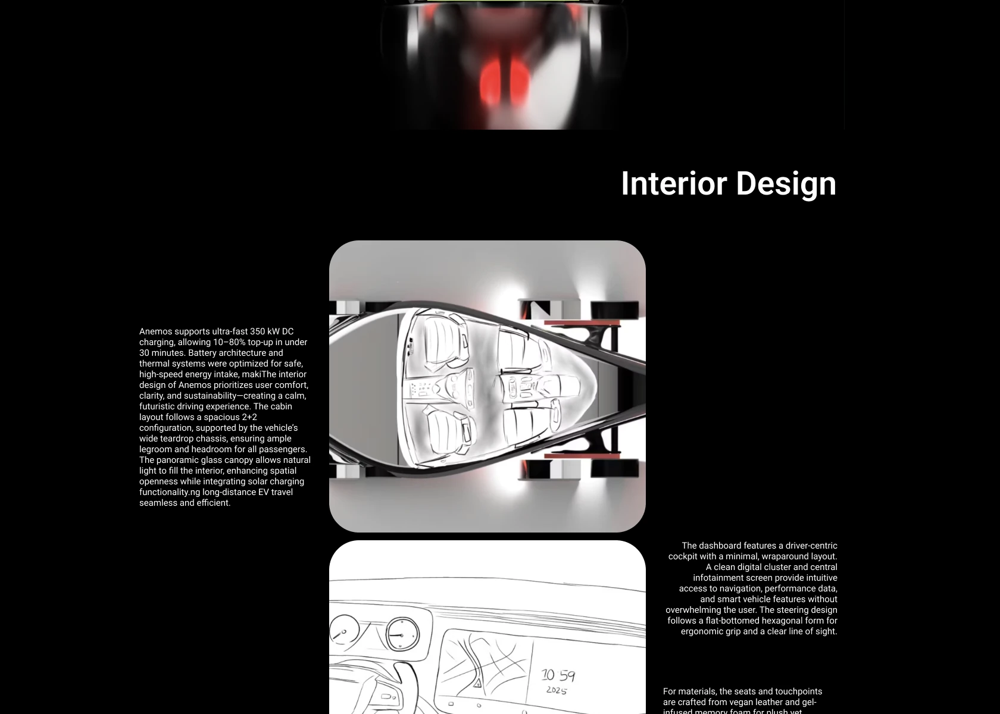
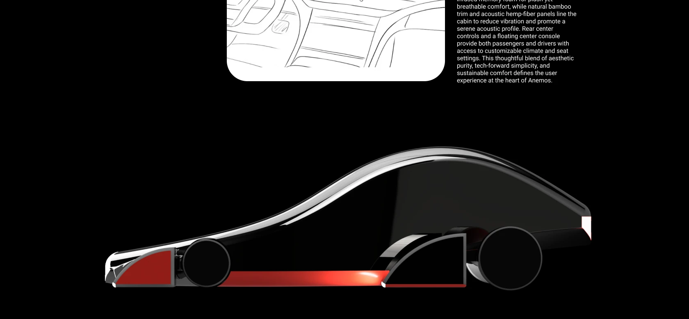
AUTOMOTIVE × DESIGN ENGINEERING
Anemos
A symphony of innovation and emotion, Anemos reimagines the bond between machine and movement in the age of electrification. It is not just a vehicle—it is an idea: of sustainability without compromise, of performance without pollution, of silence that speaks power. For those who believe that progress should be beautiful and efficiency should be exhilarating, Anemos is a return—not to the past, but to the purity of purpose. With a sculpted teardrop silhouette born from the wind itself, and a chassis woven from the lightest of materials, Anemos is the art of motion elevated to modern sculpture. Driven by a next-generation dual battery system and optimized for aerodynamic perfection, it delivers up to 1000 km of range, while its intelligent core learns from you, charges with the sun, and returns energy to your home. No engine roar, no emissions—just seamless propulsion and the quiet power of innovation. This is Anemos. Crafted for the conscious driver. Engineered for a world reborn.
Project
Year
Category
Description
Ànemos
2024-25
Car design 3D modelling Research
Aerodynamic EV
Research & Inspiration
Digital Refinement
Interior Design
Presentation & Visualization
Concept Sketching
Color, Material & Finish
3D Modeling
Who is the target audience?
What is the core brand identity or design philosophy?
Environment-conscious luxury performance users seeking futuristic, sustainable mobility.
Minimalist elegance meets aerodynamic efficiency with a focus on eco-conscious innovation.
What trends are influencing this design?
What emotional experience should the design evoke?
What materials define the character of the vehicle?
What natural or design inspirations shape the form?
What visual references guide the design language?
What colors and finishes best reflect the theme?
The shift toward EVs with solar integration, sustainable materials, and AI-enhanced driving experiences.
A sense of silent power, futuristic serenity, and intelligent movement through nature-inspired form.
Lightweight aluminum, carbon fiber, vegan leather, and solar-treated glass for a premium yet eco-forward feel.
The aerodynamic teardrop form inspired by fluid dynamics and organic purity.
Flowing architecture, precision minimalism, and performance-driven sculptural surfaces.
Deep charcoal, silver, solar red accents, and translucent gloss finishes evoking refined tech.
SAPHIRE BLACK
RED
GAINSBRO
LIGHT CORAL
WHITE
HEX CODE: APPROX. 000000
HEX CODE: APPROX. BDBDBD
HEX CODE: APPROX. FFFFFF
HEX CODE: APPROX. FF4A4A
HEX CODE: APPROX. FF0000
COLOR PREFRENCES FOR ANEMOS
From Inspiration to Final Sketch: The Anemos Journey
Tools used for sketching and concept creation:
Inspired by the teardrop forms found in nature and the seamless efficiency of aerospace design, the Anemos sketch evolved through explorations of fluid, low-slung silhouettes and clean surface transitions. Guided by the intent to create a futuristic, aerodynamic EV with minimalist elegance, early sketches prioritized uninterrupted form flow, a flattened underbody for battery integration, and a roofline designed for solar capture. Through iterative refinement, we arrived at a final sketch that balances visual purity with functional innovation—embodying Anemos' identity as a vehicle shaped by wind, light, and purpose.
Procreate Autodesk Fusion 360
Design-Driven Research Insights
Material Selection
Shape Selection
Fast Charging Capability
Battery Selection
Range Optimization
Additional Smart Features
We chose materials that balance lightness, strength, and sustainability. Aluminum alloys and CFRP reduce weight while maintaining rigidity, while Kevlar and natural fiber composites enhance safety and acoustic insulation. Interior finishes use vegan leather, bamboo, and recycled PET to support eco-conscious luxury.
Inspired by teardrop forms and aerospace flow, the vehicle’s silhouette was shaped for ultra-low drag. CFD testing guided the design of a smooth underbody, tapered tail, and integrated aero elements, achieving a drag coefficient of ~0.20 for maximum range and stability.
Anemos supports ultra-fast 350 kW DC charging, allowing 10–80% top-up in under 30 minutes. Battery architecture and thermal systems were optimized for safe, high-speed energy intake, making long-distance EV travel seamless and efficient.
High-density lithium-ion cells with silicon anodes were selected for their energy efficiency and solid-state readiness. A dual-pack setup—modular underfloor and secondary rear—ensures optimal weight distribution, long range, and supports smart features like swappability and AI-managed thermal regulation.
Research focused on achieving a real-world range of 950–1000 km. By combining aerodynamic design, regenerative braking, and lightweight materials, Anemos meets long-distance needs without compromising performance or luxury. The range is optimized for both city and highway use.
We integrated solar roof panels for auxiliary charging, V2G/V2H for energy sharing, and predictive smart charging. These features position Anemos not just as a car, but as an intelligent, connected energy platform for future mobility ecosystems.
Anemos supports ultra-fast 350 kW DC charging, allowing 10–80% top-up in under 30 minutes. Battery architecture and thermal systems were optimized for safe, high-speed energy intake, makiThe interior design of Anemos prioritizes user comfort, clarity, and sustainability—creating a calm, futuristic driving experience. The cabin layout follows a spacious 2+2 configuration, supported by the vehicle’s wide teardrop chassis, ensuring ample legroom and headroom for all passengers. The panoramic glass canopy allows natural light to fill the interior, enhancing spatial openness while integrating solar charging functionality.ng long-distance EV travel seamless and efficient.
For materials, the seats and touchpoints are crafted from vegan leather and gel-infused memory foam for plush yet breathable comfort, while natural bamboo trim and acoustic hemp-fiber panels line the cabin to reduce vibration and promote a serene acoustic profile. Rear center controls and a floating center console provide both passengers and drivers with access to customizable climate and seat settings. This thoughtful blend of aesthetic purity, tech-forward simplicity, and sustainable comfort defines the user experience at the heart of Anemos.
The dashboard features a driver-centric cockpit with a minimal, wraparound layout. A clean digital cluster and central infotainment screen provide intuitive access to navigation, performance data, and smart vehicle features without overwhelming the user. The steering design follows a flat-bottomed hexagonal form for ergonomic grip and a clear line of sight.
automobile design
product design
CAD
stimulation